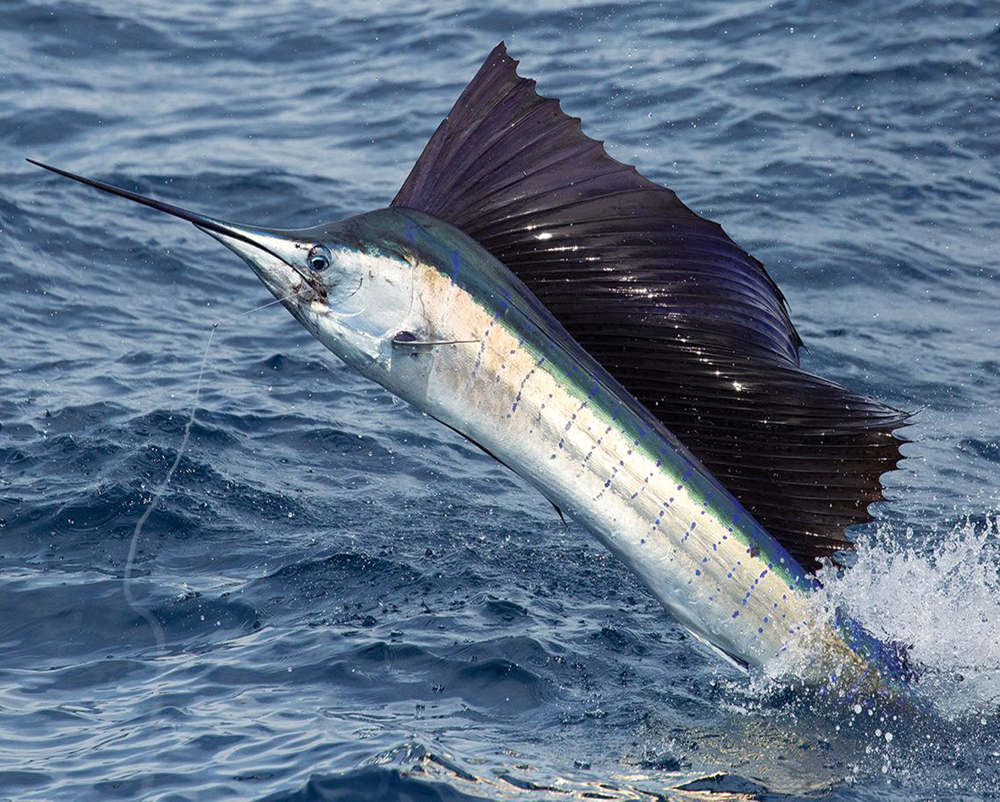

everything about fish is here
bass fish live in lakes
bass, in zoology, any of a large number of fishes, many of them valued for food or sport. The name bass covers a range of fishes, but most are placed in three families of the order Perciformes: Serranidae, including approximately 400 species of sea bass and grouper; Moronidae, sometimes considered a subfamily of the Serranidae and containing about 6 species, such as the striped and European basses; and Centrarchidae (sunfishes), including the large and smallmouth basses, prized by fishermen.
bass, in zoology, any of a large number of fishes, many of them valued for food or sport. The name bass covers a range of fishes, but most are placed in three families of the order Perciformes: Serranidae, including approximately 400 species of sea bass and grouper; Moronidae, sometimes considered a subfamily of the Serranidae and containing about 6 species, such as the striped and European basses; and Centrarchidae (sunfishes), including the large and smallmouth basses, prized by fishermen.
bass, in zoology, any of a large number of fishes, many of them valued for food or sport. The name bass covers a range of fishes, but most are placed in three families of the order Perciformes: Serranidae, including approximately 400 species of sea bass and grouper; Moronidae, sometimes considered a subfamily of the Serranidae and containing about 6 species, such as the striped and European basses; and Centrarchidae (sunfishes), including the large and smallmouth basses, prized by fishermen.
sail fish is delicious